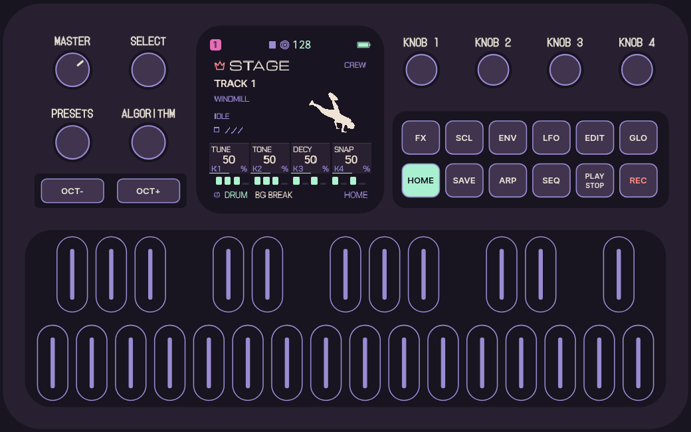

BGIRL-FM1
BGIRL-FM1: The machine to convert all humans into cybernetic b-boys and b-girls.
An electro groovebox with a sample-fed vocoder. Give the machine a voice.
Start the beat. Drop an answer into the gap. Try a different beat next time.
Tap the controls, or Tab to a button and press Enter or Space. Headphones welcome.

One machine. Your timing. Open the studio to edit, play and save.